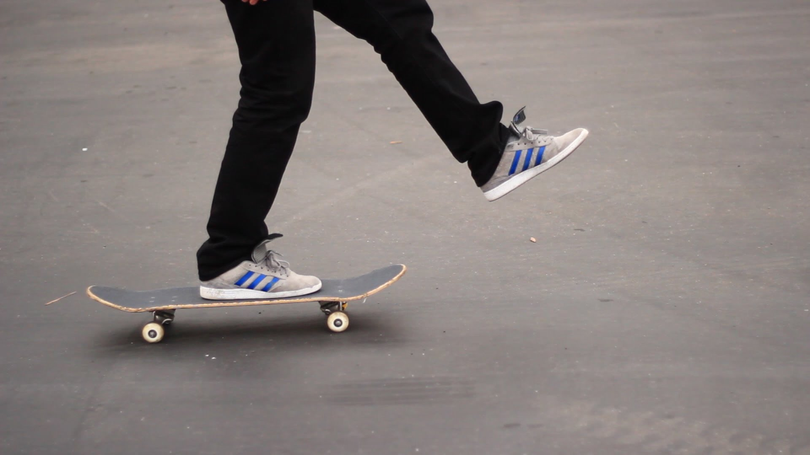

My hobbies

I like building guitars because it is relaxing and fun, as well as a I am practicing for my career.

Related to the last hobby, I like to play guitar too, what reason would I build guitars if I could not play guitar.
Lastly, I like to Longboard around my neighborhood, I just prefer longboarding over Biking because it engages your mind more than biking does because of it takes more mind power to keep speed and balance.